Esencia
El Dolarón es una tienda de barrio en el centro de Soledad de Graciano Sánchez, S.L.P. Vende ropa y mercancía que llega de Estados Unidos, pieza por pieza, a precio de saldo: lo que ves es lo que hay.
Descriptor oficial
Mercancía y ropa americana
Se escribe siempre en ese orden. Reemplaza a «Ropa americana y mercancía general» y a las demás versiones que circulan.
Lema
Calidad americana, precio mexicano.
Aprobado por Isaac el 22/10/2026. Va debajo del logo o al cierre de una pieza, nunca en lugar del nombre. «Marcas americanas, a precio de saldo» queda solo como titular actual del sitio.
Tono en una línea: cercana, directa y sin ruido; orgullosa de lo americano sin presumir. Se tutea siempre al cliente. Detalle en la sección 5.
Logo
El logo oficial es el de «EL» en etiqueta amarilla con «Dolarón» en azul (vigente desde el 7/10/2026). Hay tres versiones a color y siete de una tinta.
El original no se redibuja
Los tres logos a color son imágenes PNG transparentes y son la única fuente. No hay un archivo vectorial del autor en el repositorio. Por eso:
- Las versiones de una tinta se derivan de los píxeles del original, con la misma forma y proporción. No son un calco ni una versión redibujada.
- Nadie rehace las letras, la etiqueta o el subrayado a mano ni con otra tipografía.
- Si una imprenta pide vectores, se calca desde el PNG y se compara contra el original antes de aceptarlo. Ampliar el PNG no agrega detalle: el horizontal mide 2056 px, unos 174 mm a 300 ppp.
Versiones a color (originales)
Horizontal
Uso principal sobre fondo claro: sitio, posts, historias, portada.

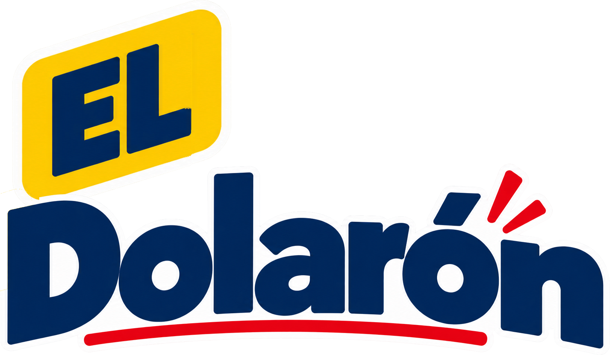
Vertical
Avatares y formatos cuadrados. No se arma recomponiendo el horizontal.

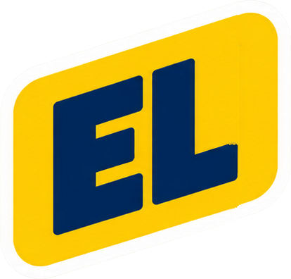
Ícono «EL»
Solo para tamaños muy pequeños: favicon e ícono de iPhone. No reemplaza al nombre en piezas de venta.

Los originales traen un contorno blanco propio, por eso también se ven bien sobre azul, como una calcomanía. Ya no existen el logo con el símbolo D y franjas ni la insignia circular: están retirados.
Versiones de una tinta
Las letras «EL» son un hueco: dejan ver el fondo. El contorno blanco y el exterior también son transparentes. Sobre fondo oscuro la tinta es blanca; sobre claro, negra o azul.
Horizontal negro
Sobre claro, una tinta: sello, fotocopia, uniforme.

Horizontal blanco
Sobre azul #16366B, negro o foto oscura. Es el logo de la tarjeta de WhatsApp.

Horizontal azul
Azul #16366B sobre claro: serigrafía o sello de una sola tinta azul.

Vertical negro
Formatos cuadrados o altos sobre claro, una tinta.

Vertical blanco
Formatos cuadrados o altos sobre azul, negro u oscuro.

Ícono «EL» negro y blanco
Tamaños muy pequeños en una tinta, sobre claro (negro) u oscuro (blanco).


Cada versión sobre cada fondo
Verde: la tinta tiene al menos 4.5:1 de contraste con el fondo. Rojo: no usar esa combinación. Las «fotos» de la lámina son simuladas; con una foto real hay que revisar el contraste en la zona donde cae el logo.
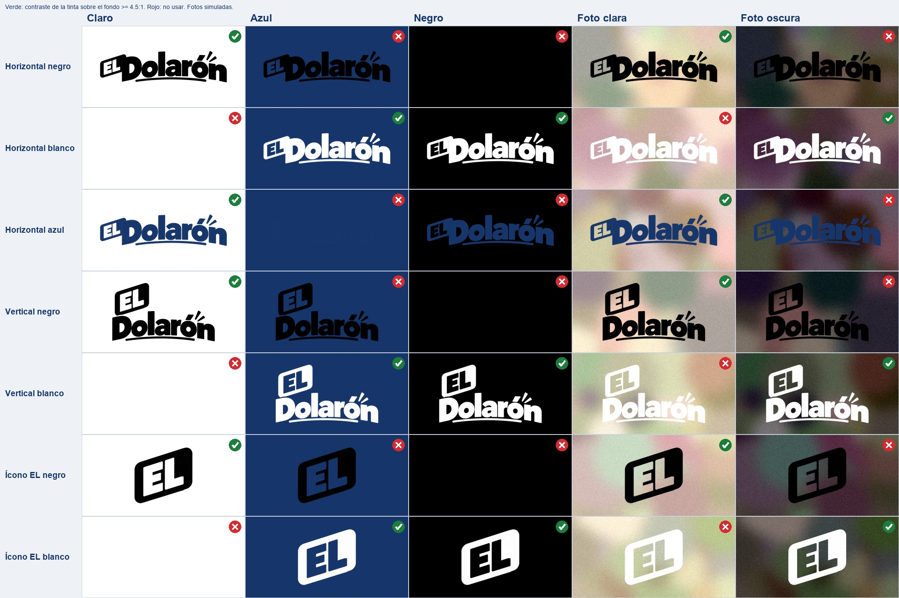
En pantallas chicas, desliza la lámina hacia los lados.
Cuándo usar cada archivo
| Situación | Archivo | Nota |
|---|---|---|
| Sitio web | el-dolaron-logo.png (a color) | El sitio usa copias reducidas en site/public/assets/. |
| Redes: perfil | el-dolaron-logo-vertical.png en 02-Perfiles-y-portadas/ | Se recorta en círculo: centrar. |
| Redes: posts e historias | Horizontal a color, sobre fondo claro | Ya viene dentro de las plantillas del kit. |
| Sobre una foto | Horizontal blanco (foto oscura) o negro (foto clara) | En una zona tranquila y con contraste. No en fotos de producto de Mercado Libre: la plataforma pide fotos sin logos ni textos. |
| Fondo azul #16366B | Horizontal o vertical blanco; el original a color también sirve | La versión blanca se lee más limpia: sin cuadro ni contorno. |
| Tarjeta de WhatsApp (/vender) | el-dolaron-logo-horizontal-blanco.png | Directo sobre la franja azul, sin soporte blanco. Ver la maqueta en la sección 7. |
| Ticket térmico (Epson TM-T20 II) | Ninguno: el nombre sale como texto, «EL DOLARON» | Sin logo en imagen. Esta guía no autoriza reactivarlo (problema del Issue #97). |
| Etiqueta AE240, 203 dpi | Ninguno: nombre, precio y barras en texto | En 25.4 mm de alto no cabe un logo junto al precio y el código. |
| Sello | Horizontal negro (o azul si la tinta es azul) | El proveedor debe probar el tamaño; ver mínimos abajo. |
| Bolsa o serigrafía | Horizontal negro, blanco o azul (una tinta) | Blanco sobre bolsa oscura; negro o azul sobre clara. Pedir prueba de color. |
| Uniforme | Horizontal blanco sobre prenda oscura; negro sobre clara. Ícono «EL» para el pecho | Bordado fino: usar el ícono, que aguanta mejor. |
| Favicon e ícono de iPhone | el-dolaron-icono-el.png (a color) | Ya existen en site/public/assets/. Negro y blanco quedan para pantallas o grabados de una tinta. |
Zona de protección
Deja libre alrededor del logo un margen de ¼ de su altura total. Nada de texto, bordes u otros elementos dentro de ese margen. Los originales no la traen incorporada: se la das tú al colocarlo.
Tamaños mínimos
Provisionales. Salen de pruebas en pantalla y de simulaciones a 203 dpi; no se han probado en papel ni en el celular de un cliente. Antes de fijar un tamaño para imprenta, imprimir una muestra.
| Medio | Mínimo | Por qué |
|---|---|---|
| Pantalla: logo horizontal | 150 px de ancho (el sitio hoy baja hasta 124) | Más chico, el subrayado y el acento se pierden. |
| Pantalla: ícono «EL» | 24 px; probar 16 px antes de usarlo como favicon | Las letras necesitan margen de reproducción. |
| Impresión térmica, horizontal de una tinta | 320 puntos (≈40 mm) de ancho, con huecos de al menos 2 puntos | A 240 puntos el subrayado es muy fino y «EL» pierde margen. Un punto mide 0.125 mm. |
Usos incorrectos
Todos estos ejemplos están hechos a propósito para mostrar el error. No los copies.
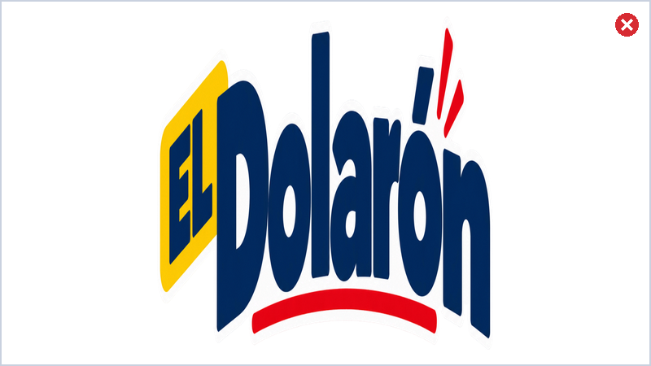
No Estirar o aplastar. Mantén las proporciones.
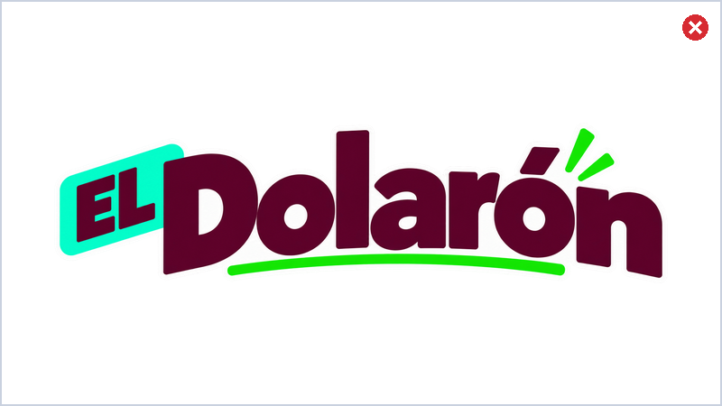
No Recolorear a mano. Usa el original o las versiones de una tinta.
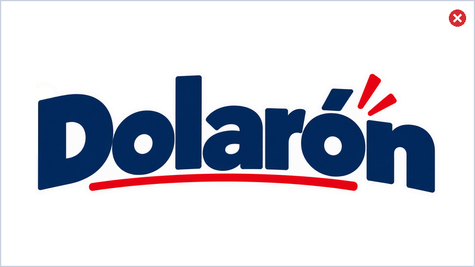
No Quitar la etiqueta «EL». El nombre es «El Dolarón», completo.
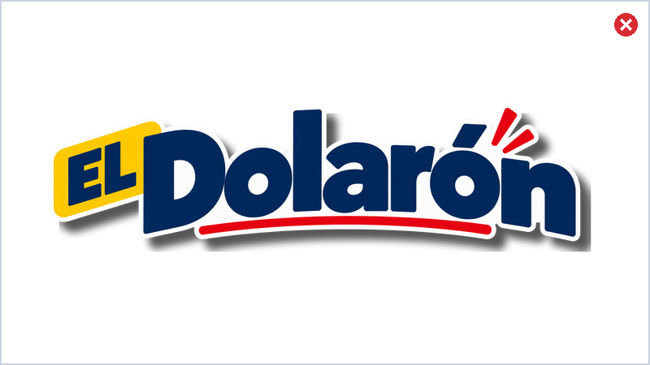
No Sombras, brillos ni efectos. El logo ya trae su contorno.
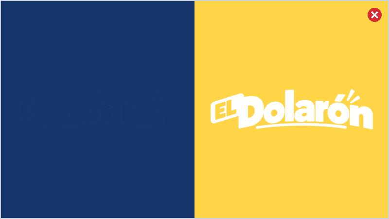
No Fondos sin contraste. Azul sobre azul no se ve; blanco sobre amarillo, tampoco.
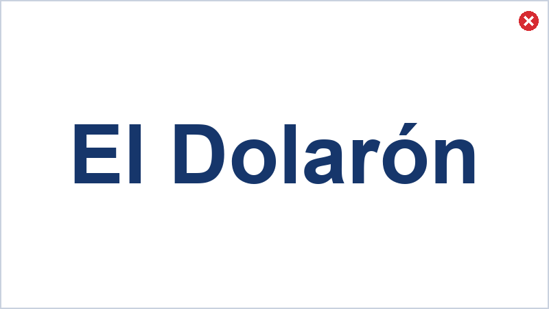
No Escribir el nombre con una fuente. El lettering del logo no es una tipografía.
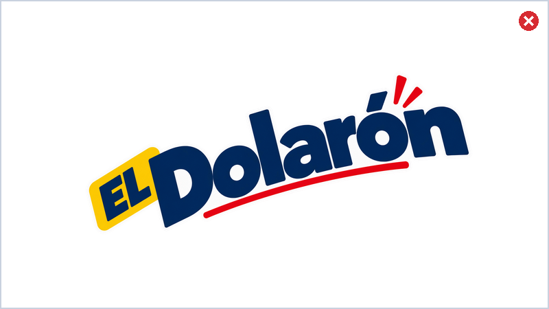
No Girar o inclinar. Ya tiene su propia inclinación.
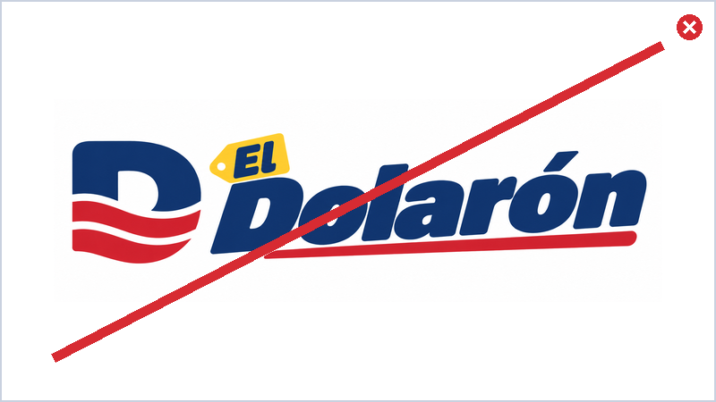
No Logo viejo de la «D». Está retirado, igual que la insignia circular.
Color
Fondo blanco, azul como tinta y dos acentos: amarillo y rojo. Los valores son los de Paleta.json, que es la fuente de la que se copian.
#16366BRGB 22, 54, 107
CMYK ≈ 79, 50, 0, 58
Nombre, títulos, texto, bordes y sombras.
#FFD447RGB 255, 212, 71
CMYK ≈ 0, 17, 72, 0
Etiquetas de precio, cintas, botón de acción.
#D72B32RGB 215, 43, 50
CMYK ≈ 0, 80, 77, 16
Subrayados, franjas y acentos.
#FFFFFFRGB 255, 255, 255
CMYK 0, 0, 0, 0
Fondo y espacio alrededor del logo.
#B3141B (--red-text)RGB 179, 20, 27
CMYK ≈ 0, 89, 85, 30
Rojo para letra chica y precios sobre papel o cartón.
#F2F5FA (--mist)RGB 242, 245, 250
CMYK ≈ 3, 2, 0, 2
Fondo suave de catálogos y paneles.
El CMYK es aproximado. Es una conversión matemática simple, solo de referencia. No es Pantone ni garantiza que el papel se vea igual que la pantalla. La imprenta debe hacer una prueba de color y aprobarla antes de tirar la serie. Las imágenes del kit tienen colores ligeramente distintos a estos valores objetivo (píxeles suavizados): no se «corrigen» masivamente.
Contraste (WCAG)
Relación entre texto y fondo. AA pide 4.5:1 en texto normal y 3:1 en texto grande (24 px, o unos 19 px en negrita).
| Texto sobre fondo | Relación | AA normal | AA grande |
|---|---|---|---|
| Azul / blanco | 11.84:1 | Sí | Sí |
Azul / neblina #F2F5FA | 10.83:1 | Sí | Sí |
| Azul / amarillo | 8.32:1 | Sí | Sí |
Rojo de texto #B3141B / blanco | 6.92:1 | Sí | Sí |
| Rojo de texto / neblina | 6.34:1 | Sí | Sí |
| Rojo de texto / amarillo | 4.87:1 | Sí | Sí |
Rojo #D72B32 / blanco | 4.91:1 | Sí | Sí |
| Rojo / neblina | 4.49:1 | No (por muy poco) | Sí |
| Rojo / amarillo | 3.45:1 | No | Sí |
| Azul / rojo | 2.41:1 | No | No |
| Amarillo / blanco | 1.42:1 | No | No |
Calculado desde los HEX en sRGB. No cubre fotos, degradados ni texturas. Sobre papel o cartón de los carteles, el rojo se verifica contra el fondo real: usar --red-text. No certifica toda la app ni el sitio. El amarillo nunca es texto sobre blanco.
Tipografía
Tres fuentes hacen el trabajo y una cuarta tiene un solo uso. Todas están en site/public/assets/fonts/. El detalle técnico y de componentes vive en site/DESIGN.md; aquí solo el resumen.
Fraunces
Titulares, nombres de pieza, cupones y pasos. Peso 800 a 900; cursiva para la parte roja de un titular.
Anton
Precios, sellos, marquesina, chips y categorías.
Archivo
Todo lo que se lee de corrido.
Rye solo carteles
Únicamente en el «Se busca» de los carteles. En ningún otro lado.
Prohibido como tipografía de diseño: Inter, Roboto, Arial y Space Grotesk. El lettering del logo no se sustituye con una fuente.
La aplicación operativa (caja, inventario) usa fuentes del sistema: es una herramienta de trabajo, no una pieza de marca.
Voz y tono
Tienda de barrio con calidad americana. Habla claro, dice lo que hay y no exagera. Se tutea siempre, también en el ticket: «Gracias por tu compra».
Sí decimos
- Precio, talla, condición, dirección y horario.
- «Lo que ves es lo que hay.» «Confirma disponibilidad.»
- «Pasa a la tienda.» «Entérate primero.»
- «Las revisamos una por una.» (pieza por pieza, sin afirmar que todo fue probado)
- Juego en los objetos: cupones y carteles «Se busca».
No decimos
- Superlativos vacíos: «los más baratos», «increíble», «únicos en México».
- «Oferta barata», «ganga», «remate», «todo a un dólar».
- Escasez o llegadas que no se pueden comprobar.
- Garantías, devoluciones o promociones que no estén definidas.
- Nombres de cadenas como si fueran proveedores.
Reglas que no se rompen: no inventar precios, horarios, descuentos ni disponibilidad. El nombre es «El Dolarón», con tilde y «El» en mayúscula; nunca «Dolaron» ni «ElDolaron». Acentos y signos ¿ ¡ completos en lo que ve el cliente. «Dolarón» es la unidad de lealtad (1 Dolarón = $1.00 MXN en tienda), no significa que todo cueste un dólar.
Vocabulario, reglas por canal (WhatsApp, redes, sitio, ticket, Mercado Libre) y las decisiones de Isaac del 22/10/2026: docs/marca/VOZ.md.
Datos oficiales
Confirmados por Isaac el 22/10/2026. Si un archivo dice otra cosa, este cuadro manda. No se agrega ningún dato fuera de esta lista.
| Dato | Valor oficial |
|---|---|
| Descriptor | Mercancía y ropa americana |
| Lema | Calidad americana, precio mexicano. |
| 444 543 7754, el único WhatsApp oficial. El 444 854 5980 no es WhatsApp. | |
| Dirección | Jardín Hidalgo 129, Zona Centro, Soledad de Graciano Sánchez, S.L.P., C.P. 78430 |
| Horario | 11 a. m. a 8 p. m., todos los días. En espacio corto: «de 11 a 8». |
| Trato al cliente | Se tutea siempre, en todos los canales. |
| Apartado en tienda | 15 % del valor del producto, por 7 días. |
| Envío: anticipo | $100 de anticipo al apartar el primer producto; se liquida antes de enviar. |
| Envío: calendario | Envíos todos los viernes. Corte el jueves a las 8 p. m. |
| Envío: costo | $99 en compras de menos de $1,000. Gratis desde $1,000. |
Aplicaciones
Piezas reales del kit. Se ven reducidas; los archivos completos están en sus carpetas.
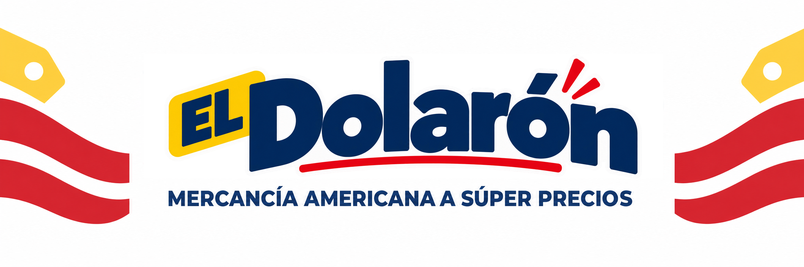
Portada · 2172×724. Revisar el recorte de cada plataforma.
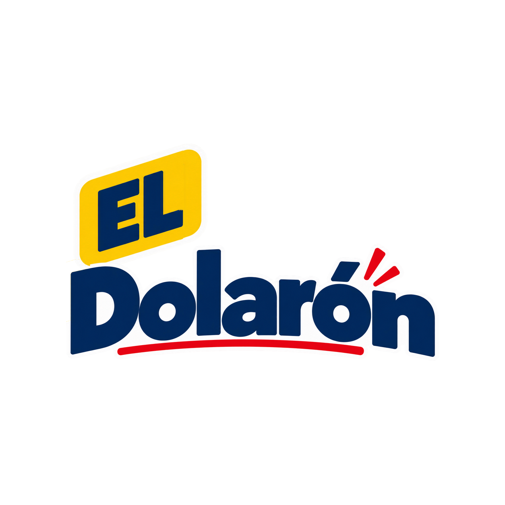
Perfil · 1254×1254. Mismo avatar en todas las redes.
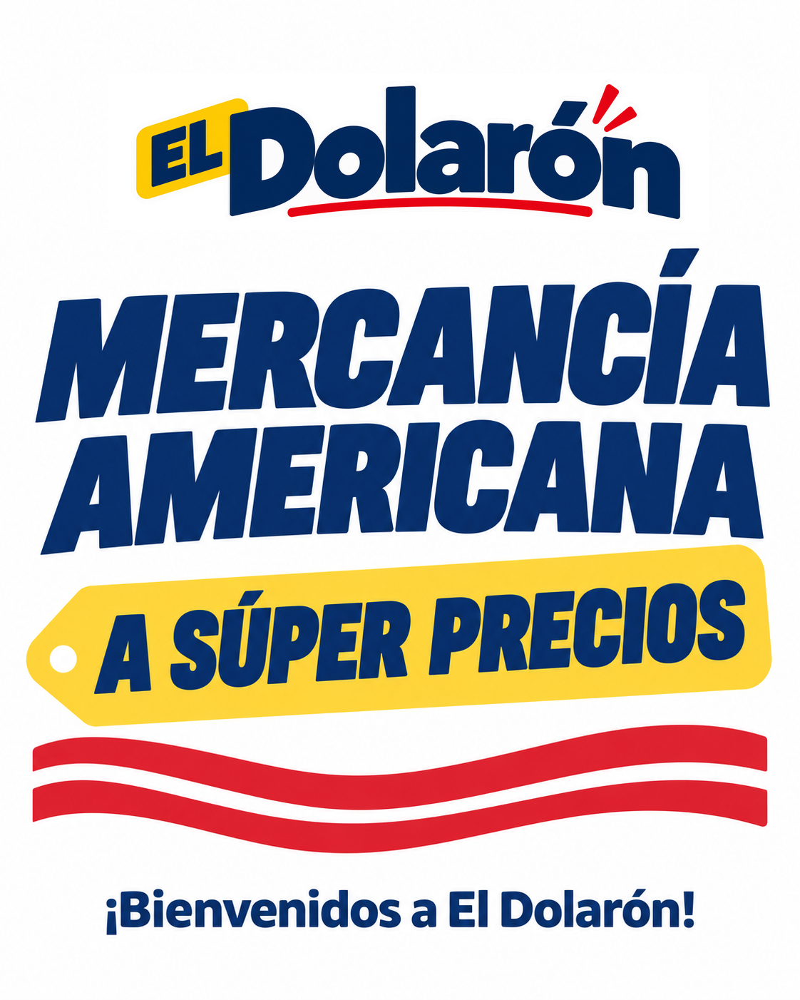
Bienvenida · 4:5
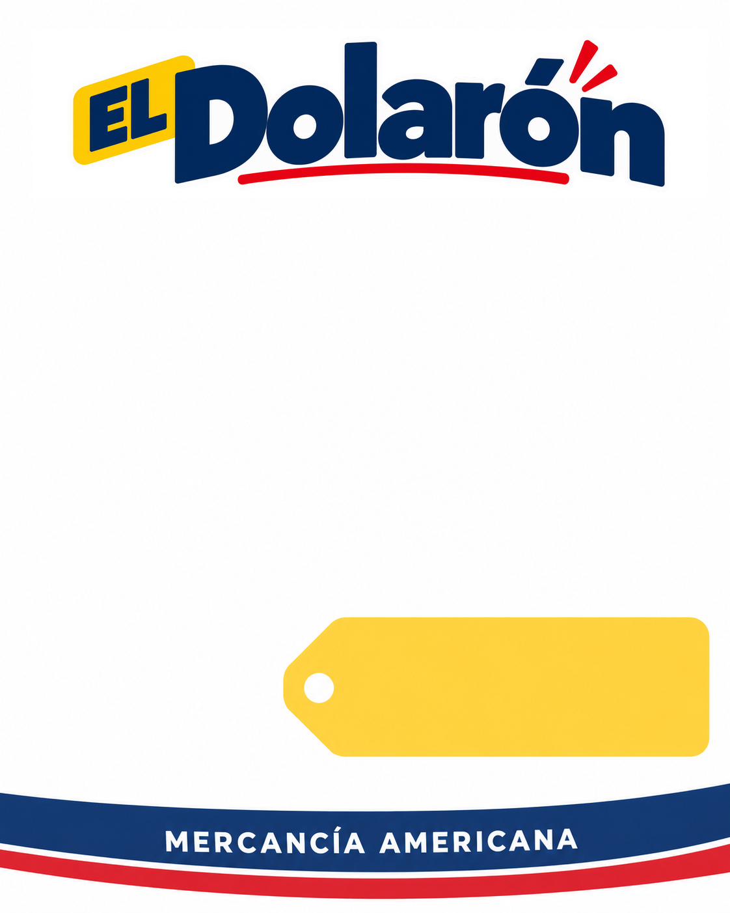
Producto · 4:5. Foto al centro; precio en la etiqueta amarilla.
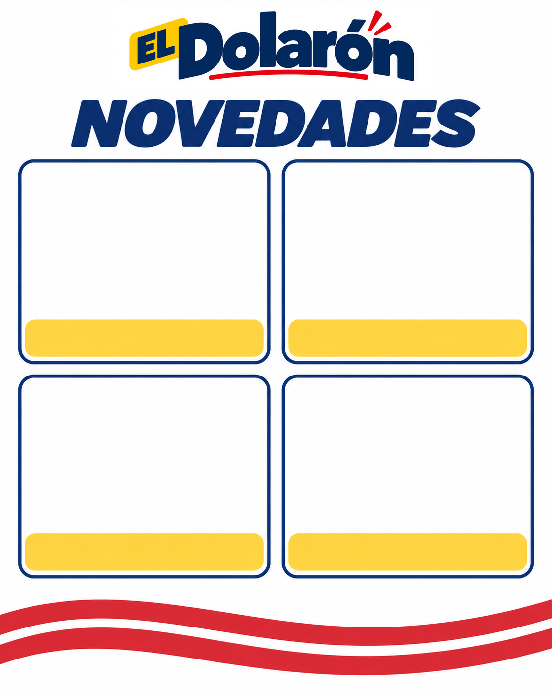
Novedades · 4:5. Cuatro fotos.
Cierre de redes · 1254×1254. Revisar contactos antes de reutilizar.
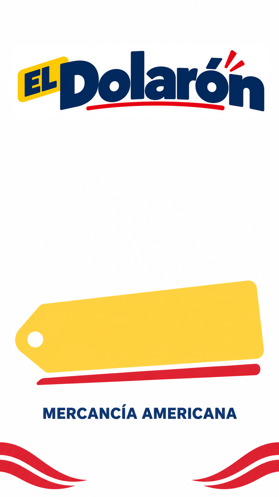
Historia de producto · 9:16
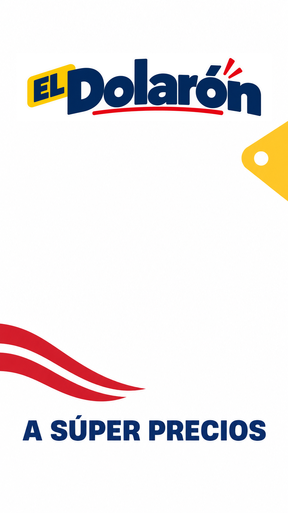
Historia de aviso · 9:16
Pendiente de actualizar: algunas plantillas todavía dicen «Mercancía americana» o «A súper precios». Son textos anteriores a las decisiones del 22/10/2026 (descriptor «Mercancía y ropa americana»; «súper precios» ya no se usa). Se corrigen en otro Issue; hasta entonces, no los publiques sin revisar el texto.
Tarjeta de WhatsApp (/vender)
Imagen JPEG de 1080×1350 que se manda por WhatsApp para vender una pieza:
- La foto de la pieza va arriba, sobre blanco.
- Una franja azul
#16366Bocupa el fondo (de y=1000 a y=1350). - En la franja: el precio en amarillo, los textos en blanco y el logo horizontal blanco, directo sobre el azul, sin cuadro blanco detrás.
- El logo se escala sin deformarlo: dentro de un espacio de 390×76 mide unos 292×76.
La maqueta de la izquierda es solo ilustrativa. La tarjeta se genera en el Issue #431, y falta revisarla a ≈360 px de ancho en WhatsApp real antes de fijar posición y mínimo.
Qué falta probar con hardware real
- Imprimir una muestra de cada tamaño mínimo en papel, sin reescalar.
- Ver la tarjeta de WhatsApp en un celular y en la app de WhatsApp.
- Prueba de color con la imprenta antes de cualquier tiraje.